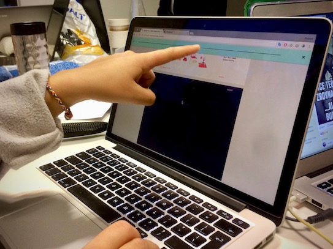

Designium
back- Time Management
- Content Creation
- Visual Composition
- Responsive Web Design
How should a design magazine look like? Perhaps, it should be the essence of design. With its attractive content and innovative layout, Designium redefines what is it like to be an online magazine.
Discovering
For this project, I have decided to work with desk research. I have found five major online magazines publishing about the topic of web design and web development. For each of them, I observed different aspects and features of the design (typography, colours, layout,…) as well as of the content (topics, writing style and tone,…).
From the visual point of view, the style was clearly defined: sans-serif typography, orange as a primary colour + different (pastel) colours, and eventually some kind of alternative layout.
Creating
I wanted to imitate a real paper magazine experience on the website. Therefore, I’ve created a layout using full-screen sized elements and features a proper cover page.
I tried to go beyond, imagining that everything is possible. I wasn’t even concerned it my ideas are technically feasible. I was surprise, how innovative this allowed me to be.
Evaluating
Once again, I felt that the importance of user testing was proven. And although I haven’t invested much in it, it still brought me some important ideas of improvement. Besides that, the fact that I’ve been developing the project in surrounding of other people helped, too. From a higher perspective, I think that the less isolated the development is, the better.
We must always keep our solution in its context, for it’s the context that gives the solution purpose.